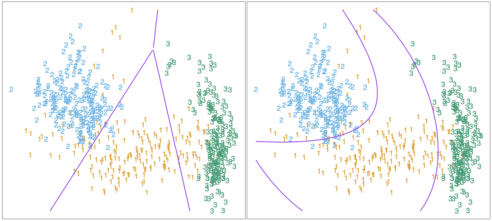

4.1 Introduction¶
A class of approaches for linear classification is to model discriminant functions \(\delta_k(x)\) for each class, and then classify \(y\) to the class with the largest value for its discriminant function. Methods that regress piecewise hyperplanar decision boundaries for any pair of classes and those who model the posterior probabilities \(\Pr(G = k \mid X = x)\) are in this class. If either the \(\delta_k(x)\) or \(\Pr(G = k \mid X = x)\) are linear in \(x\), the decision boundaries will be linear. Actually, all we require is that some monotone transformation of \(\delta_k\) or \(\Pr(G = k \mid X = x)\) be linear for the decision boundaries to be linear.
A more direct approach is to explicitly model the boundaries between the classes as linear. We will look at two methods, the perceptron model and the optimally separating hyperplane method.
While this entire chapter is devoted to linear decision boundaries, there is considerable scope for generalization. For example, we can apply any basis transformation \(h(X)\) where \(h: \mathbb{R}^p \mapsto \mathbb{R}^q\) with \(q > p\). Linear functions in the augmented space map down to nonlinear functions in the original space. The figure below shows the linear decision boundaries found in the original space and the five-dimensional space, \(X_1, X_2, X_1X_2, X_1^1, X_2^2\).
{kind=link}